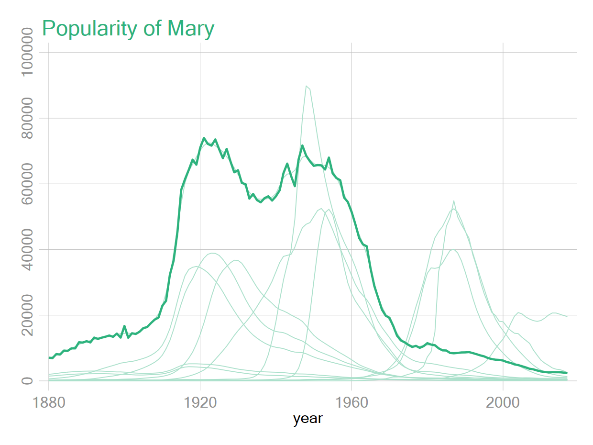

Spaghetti
Simplification et explication des programmes des graphique 86 et 87
https://mthevenin.github.io/stata_fr/graphiques.html#542_Effet_spaghetti
Graphiques 86 et 87
Ces graphiques utilisent une fonction macro (subinstr) pour les courbes en arrière plan, qui n’est pas obligatoire. En enlevant cette étape, le programme n’est pas plus court mais on s’évite de mémoriser une fonction qui n’est pas non plus utilisée à tout bout de champs.
Graphique 87
- Identique au graphique 86 (hors report de la valeur max) pour tous les prénoms sous la forme d’un graphique combiné
- La mise en forme du report des axes pour les sous graphiques alourdi la programmation, quitte à densifier un peu le rendu du graphique final on va retirer cette option
- J’ai automatisé la récupération des noms des graphiques qui entre dans la commande
graph combine
1 Graphique sans la fonction subinstr
- cette fonction permet de supprimer/remplacer un élément d’une macro par un autre. Ici on supprime le prénom sélectionné avec ""
- J’ai également supprimé le report de l’information sur l’année où le prénom a été le plus populaire, et enlevé le lissage : la commande
lineau lieu delowess( donc optionbw()enlevée)

Programme avec subinstr
local name Mary
levelsof name, l(nom)
local other: subinstr local nom "`name'" ""
foreach o of local other {
local lin2 `lin2' line n year if name=="`o'", lc("45 178 125*.40") lw(.2) ||
}
tw `lin2' line n year if name=="`name'", lc("45 178 125") lw(.5) legend(off) ///
||, xsize(20) ysize(15) ytitle("") ///
xlabel(1880(40)2017, glw(.1)) ylabel(, glw(.1)) ///
title("Popularity of `name'", pos(11) color("45 178 125"))Sans subinstr
local name Mary
levelsof name, l(nom)
foreach n of local nom {
local lin2 `lin2' line n year if name=="`n'", lc("45 178 125*.40") lw(.2) ||
}
tw `lin2' line n year if name=="`name'", lc("45 178 125") lw(.5) legend(off) ///
||, xsize(20) ysize(15) ytitle("") ///
xlabel(1880(40)2017, glw(.1)) ylabel(, glw(.1)) ///
title("Popularity of `name'", pos(11) color("45 178 125"))Pour le prénom sélectionné (ici Mary), sa courbe sera tracée en arrière plan (macro lin2) sur laquelle va se superposer sa courbe avec un trait plus épais
2 Graphique 87
- On répète dans une boucle le graphique 86 (en enlevant sans la fonction
subinstr) - Contrairement au graphique du support, on conserve les informations sur les axes pour tous les graphiques
Point important: A la fin de chaque boucle, on doit supprimer les macros empiler lin et lin2, car leur nom n’a pas été indéxé (ce qui allège un peu la syntaxe). Si on ne les supprime pas, elles vont continuer à s’empiler sur la boucle suivante. Par rapport au support, j’ai généré automatiquement le nom des graphs qui entrent dans la commande graph combine

levelsof name, l(name)
foreach nom of local name {
* courbes en arriere plan (tous les prénoms)
foreach nom2 of local name {
local lin2 `lin2' line n year if name=="`nom2'", ///
lc("45 178 125*.5") lw(.2) ||
}
* courbe pour le prénom
local lin line n year if name=="`nom'", ///
lc("45 178 125") lw(.5) title("`nom'", color("45 178 125") pos(11) ) ||
* liste des noms de graphiques pour graph combine
local nameg `nameg' `nom'
* graphique
tw `lin2' `lin' ///
||, xtitle("") ytitle("") legend(off) xlabel(1880 1930 1980 2017, nogrid) ylabel(, nogrid) ///
name(`nom', replace) nodraw
* Supprime la syntaxe du graphique pour qu'elle ne s'empile pas avec le prénom suivant
* 1 graphique = 18 courbes générées
mac drop _lin2 _lin
}
graph combine `nameg' , col(4) title("A spaghetti chart of baby names popularity", pos(11)) ///
xsize(20) ysize(15)A faire
Trouver une procédure pour automatiser le report des informations sur les axes selon la position du graphique (graphique du suppor).
Principe: le graphique combiné à n lignes et m colonnes
- (Colonne 1, ligne n) : report pour x et y
- (Colonne 1, lignes <n) : report y seulement
- (Colonnes > 1, lignes = n) : report x seulement
- (Colones >1 , ligne < n) : aucun report
Dans l’exemple du support : 12 graphiques avec 4 colonnes et 3 lignes
- Graphique 9
- Graphiques 10,11,12
- Graphique 1,5
- Graphiques 2,3,4,6,7,8